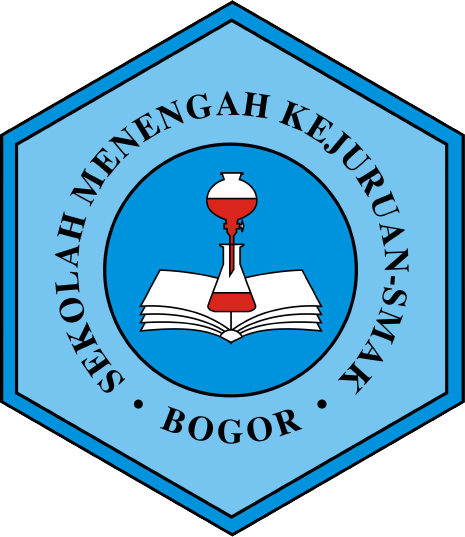

| Nama | Awanda Naurah Daniswara |
| Tempat, Tanggal Lahir | Bogor, 05 Maret 2004 |
| Asal Sekolah | |
| Alamat | Perumahan Bambu Kuning C5 no. 13, Bojonggede, Bogor |
| Hobi | Memasak, menonton film / serial, catur |
| Makanan Favorit | Marugame Udon |
| Minuman Favorit | Jus jeruk |
| naurah353@gmail.com / awandanaurah65@smakbo.sch.id |
Selama pandemi COVID-19 ini, pembelajaran dan segala kegiatan di sekolah tertunda.
Awalnya kita semua senang karena dapat istirahat di rumah (libur). Namun kasus virus COVID-19 ini
tak kunjung surut hingga lebih dari setahun. Sehingga segala aspek kehidupan perlu untuk beradaptasi.
Dalam bidang pendidikan sendiri, kegiatan pembelajaran kini tidak lagi mengandalkan pertemuan tatap muka, melainkan melalui pertemuan daring dari rumah masing-masing. Pembelajaran jarak jauh secara daring ini sebenarnya cukup menuntut siswa maupun guru untuk memiliki sarana elektronik yang memadai, sedangkan tidak semua orang mempunyainya, sehingga pembelajaran daring ini mungkin memberatkan sebagian orang.
Di satu sisi, banyak sekali aplikasi digital yang dapat dimanfaatkan untuk mempermudah kegiatan belajar-mengajar, seperti Google Classsroom, Zoom Meeting dan lain-lain. Berkat pandemi ini, salah satu hal positif yang dapat diambil adalah kita dapat bersama sama mengeksplor teknologi yang mungkin sebelumnya tidak terpikirkan yang ternyata dapat mempermudah pembelajaran.
Sebagai pelajar di SMK SMAK Bogor dengan padatnya jadwal praktik, pembelajaran daring ini sebenarnya kurang efektif. Sehingga pada akhirnya, SMK SMAK Bogor kembali beradaptasi dengan melakukan pertemuan tatap muka yang diatur sedemikian mungkin agar tetap menerapkan protokol kesehatan.
Kendala yang paling saya rasakan selama pembelajaran jarak jauh adalah kejenuhan terhadap rutinitas yang hanya berputar di dalam rumah. Saya rindu bercanda dan berkomunikasi langsung dengan teman-teman saya secara bebas. Semoga wabah COVID-19 segera berakhir agar dunia dapat kembali hidup normal.